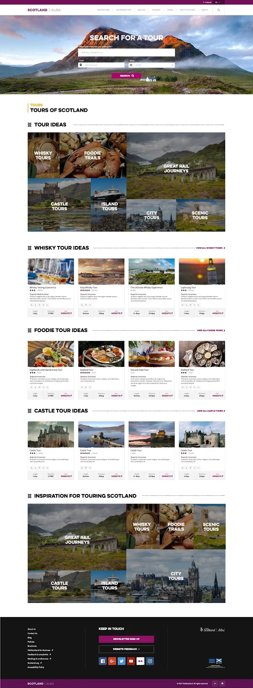
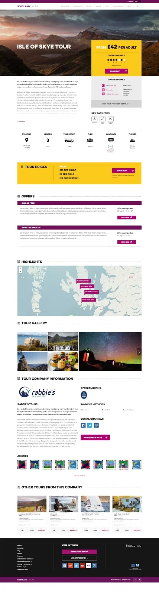

Tours Management System — one platform, three audiences
A bespoke tours management system built by Whitespace for VisitScotland, serving tour operators, tourists at home and abroad, and VisitScotland's own administrators — each with incompatible needs.
The problem
The existing system was failing all three of its audiences at once, and the failures compounded: a back end operators found unfriendly meant fewer tours were listed, which meant search had less to return, which meant tourists found nothing.
- Search often returned zero results, or results that didn't match what customers were looking for.
- Tour categories were outdated — "coach tour" rather than specific options like "minibus".
- Not enough search flexibility: no filtering on accessibility, budget or luxury, or tour length.
- An unfriendly back end meant fewer than 700 tours were ever listed.
- Uninspiring front-end visuals, and admin tooling that didn't support proper tour management.
Personas
Six personas were developed to make sure every consumer need was considered in the service design. They were specific enough to settle arguments — the value of a persona is that it can rule an idea out.
Barbara, 45, a teacher from Berlin. An avid Outlander fan planning a Scotland trip with her husband and two sons on a £2,000 budget. Her journey runs from researching on the German-language site, to landing on an Outlander page, to searching tours by dates and group size — and needing a way to ask a question without restarting the whole process. Plus something to satisfy her sons' craving for adventure.
Barbara is why language, group size and the ability to ask a mid-flow question all became requirements rather than nice-to-haves.
What I did
- User research — persona development and journey mapping.
- Low-fidelity prototyping, wireframes and collaborative workshops.
- Stakeholder management and coordination with development and creative teams.
- User acceptance testing, iterative refinement and performance monitoring on an agile cadence.


Testing
A workshop tested the back-end product with eight users across a set of ten questions — the operator experience mattered as much as the tourist one, since nothing reaches the front end unless an operator can list it. User Acceptance Testing then validated the end-to-end business flow, performed jointly by the client and Whitespace, which meant building strong communication across developers, project managers and external stakeholders.
Results — first twelve months
The listing figure is the one I'd point to. More than doubling the tours on the platform was not a marketing result — it followed from making the back end something operators could actually use.